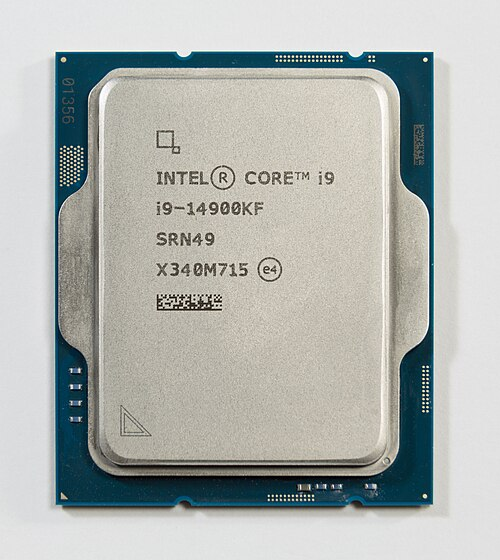
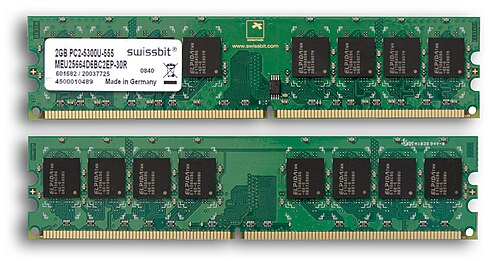
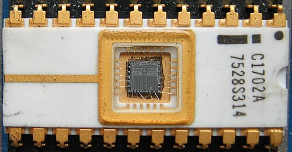
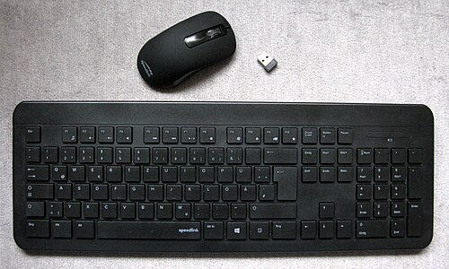
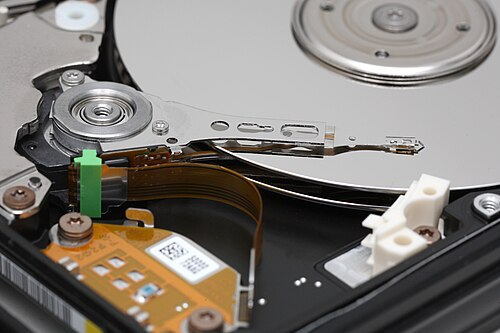
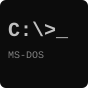
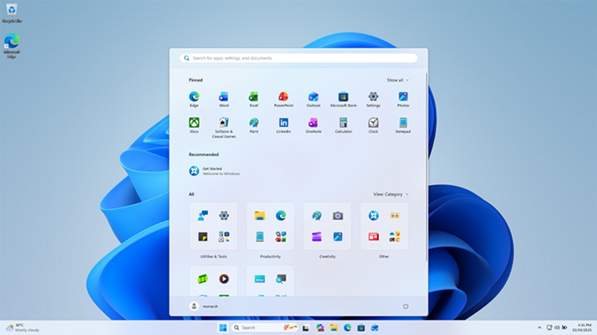

1. Entrada
Se ingresan datos mediante dispositivos como teclado, mouse, escáner, sensores o formularios digitales. En esta etapa la máquina recibe la materia prima con la que va a trabajar.
Informática Aplicada · C1-21-10 · Comisión A y B · Unidad 1
Una guía visual para dar los primeros pasos en el mundo de la Informática: qué es una computadora, la diferencia entre hardware y software, cómo intervienen el procesador y la memoria, y para qué sirve un Sistema Operativo.
Parte 1 · Punto de partida
Los datos por sí solos no alcanzan: deben ser interpretados, relacionados y procesados para convertirse en información útil para tomar decisiones. Esa es, en esencia, una de las tareas centrales de la informática.
Se ingresan datos mediante dispositivos como teclado, mouse, escáner, sensores o formularios digitales. En esta etapa la máquina recibe la materia prima con la que va a trabajar.
La computadora analiza, compara, ordena y transforma esos datos siguiendo instrucciones precisas. Aquí intervienen la CPU, la memoria y el software del sistema o de aplicación.
Los resultados se presentan como informes, gráficos, mensajes, pantallas o archivos listos para usar. Lo importante es que esa salida ya tiene significado para quien la interpreta.
Es un valor aislado, sin contexto suficiente. Por ejemplo: "25", "Ausente" o "10/04/2026". Por sí solo no siempre permite tomar una decisión.
Surge cuando los datos se organizan, comparan o interpretan. Por ejemplo: "25 estudiantes asistieron a clase" ya comunica algo útil.
Es el conjunto de elementos físicos y lógicos que permiten captar, procesar, almacenar y comunicar información de manera automática.
Parte 1 · Hardware y software
Es una máquina programable capaz de realizar cálculos y tomar decisiones lógicas a una velocidad miles de millones de veces más rápida que la alcanzable por un ser humano. Para funcionar, combina dos partes inseparables: lo físico y lo lógico.
Hardware
Es todo lo que podemos ver y tocar: el gabinete, el monitor, el teclado, el mouse, la placa madre, el disco y cada componente material que forma el equipo.
Software
Es todo lo que podemos ver y no tocar: los programas, las aplicaciones y el Sistema Operativo, que le indican al hardware qué tareas debe realizar.
Clasificación
No todo programa cumple la misma función. Algunos se encargan de que el equipo funcione correctamente y otros están pensados para resolver tareas concretas del usuario.
Administra y coordina los recursos de la computadora, como el Sistema Operativo, los controladores y las utilidades básicas del equipo.
Resuelve tareas concretas del usuario: procesadores de texto, planillas, navegadores, editores, reproductores y plataformas de diseño.
Porque sin software el hardware no puede ejecutar acciones útiles, y sin hardware el software no tendría dónde funcionar. La informática aparece precisamente en ese vínculo entre ambos mundos.
Clasificación técnica
Aunque hoy predominan las computadoras digitales, conocer los otros modelos ayuda a entender cómo evolucionó la computación y por qué se la sigue clasificando de esta manera.
Trabajan con magnitudes físicas continuas, como tensión o presión. Fueron útiles para representar fenómenos continuos y resolver ciertos cálculos técnicos.
Ejemplo: un termómetro de mercurio o un velocímetro de aguja, que miden magnitudes de forma continua.
Operan con valores binarios (0 y 1). Son las más utilizadas hoy por su velocidad, precisión, capacidad de almacenamiento y facilidad para ejecutar múltiples tareas.
Ejemplo: la computadora de escritorio, la notebook o el celular que usás todos los días.
Combinan elementos analógicos y digitales para resolver problemas complejos en ámbitos específicos, donde se necesita representar señales físicas y procesarlas digitalmente.
Ejemplo: un equipo médico que capta señales analógicas (como un electrocardiograma) y las convierte a datos digitales para procesarlas.
Hardware en acción
Los periféricos amplían las capacidades de la PC. Gracias a ellos la computadora puede recibir información, mostrar resultados, conectarse con otros equipos o guardar datos para utilizarlos más adelante.
Ingresan datos desde el exterior hacia la computadora: teclado, mouse, micrófono, cámara web, escáner.
Muestran o entregan al usuario la información procesada: monitor, impresora, parlantes.
Permiten enviar y recibir información, como una pantalla táctil o un auricular con micrófono.
Hacen posible la conexión entre dispositivos y redes: placa de red, módem, router.
Guardan datos para su uso posterior, temporal o permanente: disco rígido, SSD, pendrive.
Almacenamiento
Conocer estos grupos permite comparar velocidad, capacidad, durabilidad y usos más comunes de cada medio.
CDs, DVDs y Blu-ray. Fueron muy utilizados para distribuir música, películas, programas y copias de seguridad.
Discos rígidos, cintas magnéticas y antiguos diskettes. Guardan datos mediante cambios magnéticos y siguen siendo relevantes en muchos entornos.
SSD, pendrives y tarjetas de memoria. Son muy frecuentes hoy por su rapidez, tamaño reducido y facilidad para transportar información.
Arquitectura básica
Cada componente cumple un papel específico. Entender su función ayuda a interpretar mejor por qué un equipo puede ser más rápido, más estable o más adecuado para ciertas tareas que otro.

Es la unidad central de proceso. Controla el funcionamiento general del equipo y ejecuta instrucciones. En ella se distinguen la unidad de control y la unidad aritmética y lógica.

Almacena temporalmente los programas y datos en uso. Es rápida y volátil: se vacía al apagar la PC. Cuanta más RAM, más cómodo suele ser el trabajo con varias tareas al mismo tiempo.

Guarda información permanente necesaria para el arranque y tareas básicas del sistema. Su contenido no se modifica como el de una memoria de uso común.

Permiten interactuar con el exterior: entrada, salida, comunicación, almacenamiento o uso mixto. Son la vía por la que el usuario se relaciona con la computadora.

Conservan información de forma permanente: discos, SSD, tarjetas de memoria, CDs o pendrives. A diferencia de la RAM, mantienen los datos incluso al apagar.
Memoria
Una confusión frecuente al comenzar informática es pensar que toda memoria cumple el mismo papel. En realidad, cada una responde a necesidades diferentes.
Es temporal y de trabajo. Guarda los programas abiertos y los datos que se están usando en ese momento. Por eso, si se corta la energía, esa información se pierde.
Contiene información permanente, necesaria para iniciar y verificar el funcionamiento básico del equipo. Está más asociada al arranque que al uso diario de aplicaciones.
No es que la memoria RAM sea inservible sin más: el Sistema Operativo es el que ayuda al usuario a comunicarse con la computadora, pero si no existe un Sistema Operativo en nuestro equipo o dispositivo, simplemente no podemos trabajar. Por eso, en la segunda parte de esta clase profundizamos en qué son y cómo funcionan.
En el foro de la Unidad, vas a realizar una actividad de intercambio sobre las computadoras que conocés y qué esperás de los próximos pasos en Informática. Compartí también los comentarios o dificultades que hayas tenido al resolver la tarea.
Aplicación real
La informática está presente en casi todas las actividades actuales: cuando pagamos con tarjeta, usamos el campus virtual, hacemos una videollamada o consultamos una historia clínica digital. Comprender sus bases ayuda a interpretar mejor el mundo tecnológico en el que vivimos.
Plataformas virtuales, documentos compartidos, aulas híbridas y sistemas de gestión académica dependen del procesamiento y organización de datos.
Facturación, control de stock, liquidación de sueldos, reportes y toma de decisiones utilizan sistemas informáticos de forma permanente.
Celulares, cajeros automáticos, redes sociales, mapas, compras online y plataformas de streaming son ejemplos cercanos del uso diario de la informática.
Parte 2 · Concepto central
Es el software principal de la computadora: el conjunto de programas que administra los recursos del equipo y hace posible que el usuario pueda interactuar con el hardware y con el resto de los programas.
Ofrece el entorno visual a través del cual interactuamos con la computadora, como el escritorio con sus íconos y menús.
Coordina el uso del procesador, la memoria y el almacenamiento para que todos los programas funcionen de manera ordenada.
Sin un Sistema Operativo, el hardware no tiene forma de recibir instrucciones ni de comunicarse con el usuario.
Panorama del mercado
Existen distintos Sistemas Operativos según el tipo de equipo y la época en que fueron creados. La diferencia más visible entre ellos es si cuentan o no con un entorno gráfico.

SO sin entorno gráfico
Microsoft Disk Operating System. Uno de los primeros sistemas operativos de uso masivo en PCs: el usuario debía escribir comandos de texto para ejecutar cualquier acción.
SO con entorno gráfico
El sistema operativo de interfaz gráfica más extendido en computadoras personales. Evolucionó desde sus primeras versiones hasta Windows 11.

SO con entorno gráfico
Sistema operativo de código abierto, disponible en varias distribuciones (Ubuntu, Fedora, Debian, entre otras). Muy usado en servidores y entornos técnicos.

SO con entorno gráfico
Sistema operativo de Apple para sus computadoras Mac, reconocido por su diseño cuidado y su integración con el resto de los dispositivos Apple.
Los smartphones y tablets también funcionan con Sistemas Operativos propios, como Android (Google) e iOS (Apple). Cumplen la misma función que en una computadora: administrar el hardware del dispositivo y permitir que el usuario lo utilice.
Foco de la clase
Es el lugar de Windows donde se concentran las herramientas para revisar y configurar el funcionamiento del equipo: desde el hardware conectado hasta las cuentas de usuario.

Estado general del equipo, copias de seguridad y herramientas de mantenimiento.
Configuración de la conexión a Internet y de las redes a las que está conectado el equipo.
Dispositivos conectados, impresoras, mouse, volumen y configuración de audio.
Instalar, desinstalar o modificar los programas que tiene cargados el equipo.
Administración de los perfiles y permisos de quienes usan la computadora.
Fondo de escritorio, temas visuales y ajustes de accesibilidad del sistema.
Vamos a opinar en el foro de discusión permanente de la Unidad sobre el tema expuesto en esta clase.
Para dimensionar la información
Cuando hablamos de almacenamiento también necesitamos una forma de medir cantidades. Estas unidades permiten dimensionar archivos, memorias y discos.
| Unidad | Equivalencia | Uso habitual |
|---|---|---|
| Bit | Unidad mínima | Valor binario 0 o 1 |
| Byte | 8 bits | Un carácter |
| KB | 1.024 bytes | Archivos de texto pequeños |
| MB | 1.024 KB | Fotos y canciones |
| GB | 1.024 MB | Videos y capacidad de pendrives |
| TB | 1.024 GB | Discos y grandes volúmenes de datos |
Ejemplo: un documento de Word de pocas páginas pesa algunos KB, mientras que una película en buena calidad puede ocupar varios GB.
Cierre de la clase
Un repaso de los conceptos más importantes de la Clase 1, con preguntas para abrir el debate.
| Término | Definición breve | Ejemplo |
|---|---|---|
| Hardware | Parte física de la computadora | Teclado, monitor, disco |
| Software | Parte lógica: programas e instrucciones | Windows, Word |
| CPU | Procesa la información y ejecuta instrucciones | El "cerebro" del equipo |
| Memoria RAM | Guarda temporalmente lo que se está usando | Programas abiertos en ese momento |
| Memoria ROM | Guarda de forma permanente lo necesario para el arranque | Instrucciones básicas de inicio del equipo |
| Periférico | Dispositivo de entrada, salida, E/S, comunicación o almacenamiento | Teclado, monitor, router, pendrive |
| Sistema Operativo | Administra los recursos y conecta hardware y usuario | Windows, Linux, macOS |
| Panel de Control | Centro de configuración de Windows | Cambiar el volumen o instalar un programa |
"Entender cómo funciona una computadora no es sólo una cuestión técnica: es aprender a pensar cómo se organiza la información en el mundo digital."
Recursos multimedia
Material audiovisual para reforzar y ampliar los conceptos vistos en esta clase.
Parte 1 · Hardware y software
Parte 2 · Sistemas Operativos